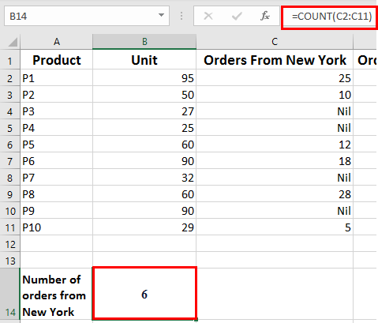

Mandhira Nayagi
I write documentation for software people use every day, so a new user can finish the task without asking for help.
I have five years of experience writing user guides, step-by-step walkthroughs, API documentation, release notes, FAQs and training materials for enterprise and SaaS applications. I work in a docs-as-code workflow with Markdown, Git and Postman, and I work closely with developers, QA engineers and subject matter experts to keep every page accurate.
Writing samples
StayEasy Booking API
A complete documentation set for a hotel booking API: getting started, authentication, endpoint reference, errors, rate limits, changelog, an OpenAPI 3.0 file and a Postman collection. Here is one endpoint from the reference.
Reserves a room for the dates you specify. Send an Idempotency-Key header to retry safely without creating duplicate bookings.
| Field | Type | Required | Description |
|---|---|---|---|
room_id | string | Yes | ID of the room to book |
check_in | string (date) | Yes | Check-in date in YYYY-MM-DD format |
check_out | string (date) | Yes | Check-out date. Must be after check_in |
guests | integer | Yes | Number of guests. Cannot exceed the room's max_guests |
guest.name | string | Yes | Full name of the lead guest |
guest.email | string | Yes | Email address for the confirmation |
curl -X POST "https://sandbox.stayeasy.example.com/v1/bookings" \
-H "Authorization: Bearer YOUR_API_KEY" \
-H "Content-Type: application/json" \
-H "Idempotency-Key: 3f2b8c1e-5d4a-4c1b-9a7e-2b6f0d9e1a44" \
-d '{
"room_id": "rm_1042",
"check_in": "2026-11-10",
"check_out": "2026-11-12",
"guests": 2,
"guest": { "name": "Priya Raman", "email": "priya.raman@example.com" }
}'
{
"id": "bk_88213",
"status": "confirmed",
"room_id": "rm_1042",
"check_in": "2026-11-10",
"check_out": "2026-11-12",
"guests": 2,
"total_price": { "amount": 9000, "currency": "INR" }
}
| Status | Error code | Cause and fix |
|---|---|---|
400 | invalid_request | A field is missing or badly formatted. Check the request body against the table above. |
409 | room_unavailable | The room is booked for some or all of those dates. Search again and choose another room or dates. |
429 | rate_limited | Too many requests. Wait for the number of seconds in the Retry-After header. |
StayEasy is a fictional product I created to show how I document an API. It does not describe the work of any employer.
Developer documentation
Three short documents for developers and product users: a README for a command-line tool, a one-page quick start and release notes. For the tool and the quick start, I ran every command and used the real output.
README for a command-line tool
The README for readtimer, a small Python tool that estimates how long a Markdown file takes to read. It covers installation, a first run, every option, examples with real output, exit codes and troubleshooting.
python3 readtimer.py examples/guide.md examples/guide.md: 1 min read (106 words)
Quick start: create your first Git repository
A one-page guide that takes a new user from zero to a first commit in about five minutes. Each step has one command, the result to expect, and a table of common errors at the end.
git add README.md git commit -m "Add README" [main (root-commit) d2be91b] Add README 1 file changed, 1 insertion(+) create mode 100644 README.md
Release notes
Release notes for StayEasy Manager 3.2, a fictional hotel management web application. They open with highlights and what the reader needs to do, then cover new features, improvements, fixes, changes that may affect users, deprecations and known issues with workarounds.
- Import room prices from a CSV file. Update prices for many rooms at once.
- Filter the booking calendar. Show only the room types and statuses you need.
- Faster search. Booking search returns results more quickly for large accounts.
The readtimer tool, StayEasy Manager and its release notes are examples I created to show my writing. They do not describe the work of any employer.
Business requirements: online check-in
A short business requirements document for a fictional feature. It starts with the problem and a measurable goal, then sets the scope, names the stakeholders, compares the current and future process, and lists numbered requirements with a priority and a source. User stories have acceptance criteria written as Given, When, Then.
- Problem and goal. Check-in takes about 6 minutes. The goal is 2 minutes or less.
- Requirements. Ten functional and five non-functional requirements, ranked Must, Should or Could.
- Acceptance criteria. Three user stories with testable outcomes, including the exact error messages.
- Risks and open questions. Each has an owner and a date.
The product, people, figures and dates are examples I created. They do not describe the work of any employer.
Performing data calculations using formulas in Excel 365
A hands-on walkthrough with 22 annotated screenshots. It opens with the tasks the learner will complete, then gives numbered steps for four practice areas: running totals, counting cells, built-in functions and formula options. Here are two excerpts.
Count cells in a range
- Select cell B14.
- To find the number of orders from New York, in the formula bar, type
=COUNT(C2:C11)and press Enter. The result is displayed in cell B14.
Work with built-in functions
- Select cell F2.
- To calculate the gift amount for Kivell, in the formula bar, type
=IFS(C2>850,"25",C2>650,"20",C2>450,"15",C2>250,"10",TRUE,"F")and press Enter. The result is displayed in cell F2.The gift amount for each Order ID is calculated as follows:
Total Cost Gift Amount >850 25 >650 20 >450 15 >250 10 ![The Shipping worksheet is open and is partially shown. The Name Box and the formula bar are shown. The formula to calculate the gift amount for Kivell is shown in the formula bar and is highlighted in red. Column A displays the order ID, column B displays the name of the person, column C displays the total cost in dollars, column D displays the shipping cost in dollars, column E displays the shipping time in days, and column F displays the gift amount in dollars. Row 2 displays the data of Kivell. The result of the formula is shown in the cell F2 and is highlighted in red.](samples/excel-walkthrough/images/10-shipping-ifs-gift-amount.png)
Instructional design
Two samples: a slide-by-slide course storyboard, and a complete lesson package that runs from objectives through to evaluation.
Git Basics
10 slides introducing Git, version control, repositories, working copies and branching strategies, with a drag-and-drop knowledge check and a multiple-choice question.


Retrieve data with SQL: a 2-hour beginner lesson
A complete lesson package for new analysts and support staff who work with booking data. Every objective is taught, practised and assessed, and a table in the README checks that nothing is missing. The booking data is made up, and I ran every query to check the results.
- Describe a table, a row and a column
- Write a
SELECTstatement that returns chosen columns - Filter rows with
WHERE,ANDandOR - Sort results with
ORDER BY - Summarise data with
COUNT,SUM,AVGandGROUP BY
Before and after: editing samples
Three examples of turning confusing text into clear text, each with a note on every change and why I made it. The "before" text is an invented example that shows common problems.
A dense paragraph
Before (56 words, one sentence)
In order to facilitate the utilisation of the idempotency functionality, API consumers are advised to leverage the Idempotency-Key header such that, in the event that a request is retried subsequent to a network failure, duplicate bookings will not be created as a result of the retried request being processed by the server for a second time.
After (51 words, three sentences)
To avoid duplicate bookings when you retry a request, send an Idempotency-Key header with a unique value, such as a UUID. If a network error stops you from seeing the response, send the request again with the same key. The API returns the original booking instead of creating a second one.
- Starts with the goal, so the reader sees the benefit before the instruction.
- Splits one long sentence into three, with one idea in each.
- Replaces heavy phrases such as "subsequent to" and "in the event that" with plain words.
- Says what the API does, so the reader knows the result to expect.
An error message
Before (6 words)
Error 4012: Invalid input in field.
After (14 words)
Check-out date must be after check-in date. Change the check-out date and try again.
- Names the field, says what is wrong, and tells the reader what to do next.
- Drops the code from the front, because the reader needs the problem first.
My editing checklist
- The title says what the reader will do or learn.
- Requirements and warnings come before the step they affect.
- Each step has one action and starts with a verb.
- Interface labels are bold and match the screen exactly.
- Every fact was checked with a subject matter expert or the product.
Application FAQs
Short answers for end users of a web application. Each one starts with the question a user would ask, then gives the steps or facts in the order they are needed.
How are users assigned to a specific Facility or a Surgeon?
To assign the user to specific Facility, click SELECT FACILITIES and select the required Facility. To assign the user to all Facilities, select the Assign to all facilities check box.
To assign the user to specific Surgeon, click SELECT SURGEONS and select the required Surgeon. To assign the user to all Surgeons, select the Assign to all surgeons check box.
If a user role is assigned to a surgeon, what access does it provide?
Assigning a User Role to a Surgeon allows the User Role to view patients, create surgical plans, and view optimization data. You can use the Patient Access and Optimization Access options to allow the user to access patients' and optimization data. The Surgeon can also edit who has access to their patients and optimizations, so this can change based on the Surgeon preferences as well.
How I work
- Start with the reader
- Before I write, I decide who is reading and what they are trying to get done. Then I write the shortest clear path to that goal.
- Get it right with the team
- I turn business and functional requirements into documentation by working with developers, QA engineers and subject matter experts, and I check steps against the product itself.
- Docs as code
- I write in Markdown, keep content in Git, and review changes through pull requests. For APIs, the reference follows a single OpenAPI file and is tested in Postman.
- Keep pace with releases
- In Agile teams I document each sprint's features and interface changes, and I write release notes people can scan quickly.
- Improve from feedback
- I use feedback and assessment results to revise pages that confuse readers.
Skills and tools
Documentation
User guides, step-by-step walkthroughs, API documentation, online help, release notes and change logs, FAQs, knowledge base articles, training manuals and assessments.
Docs-as-code and tools
Markdown, Git and GitHub, Postman, MS Word, MS Office including Excel, HTML and XML editors, Visual Studio.
Practices
Agile and Scrum documentation, requirements analysis, UX writing, structured authoring, diagrams, flowcharts and UI walkthroughs.
Languages and data
Python, JavaScript, SQL, HTML and XML, C#. Databases: Oracle and SQL Server.
Subject areas
SaaS and enterprise applications, cloud platforms such as Google Cloud Platform, hospitality web applications, e-learning, and election and government forms.
AI and productivity
Grammarly, Notion AI, Microsoft Copilot.
Experience
-
June 2025 to October 2025Video Presentation SpecialistCommercial Base Software, Ltd.
Created technical video tutorials and documentation presentations on C# concepts, software features and application workflows, with storyboards and scripts.
-
April 2024 to December 2024Technical WriterCivica Resource Pvt. Ltd.
Wrote and maintained end-user documentation for enterprise software, and documented Agile sprint releases, UI updates and feature enhancements.
-
May 2020 to March 2024Technical Writer and Business AnalystBuddhi Techno Logic
Wrote user manuals, quick-start guides, FAQs, troubleshooting guides and API documentation, created walkthrough guides, and designed training curricula with assessments and hands-on labs.
-
2003 to 2012Earlier teaching rolesAlagappa University Study Centre, Eurokids Butterflies
Taught undergraduate Information Technology and Management courses and delivered early-learning programs.
Contact
I am looking for a remote technical writing role. The quickest ways to reach me are LinkedIn and email.